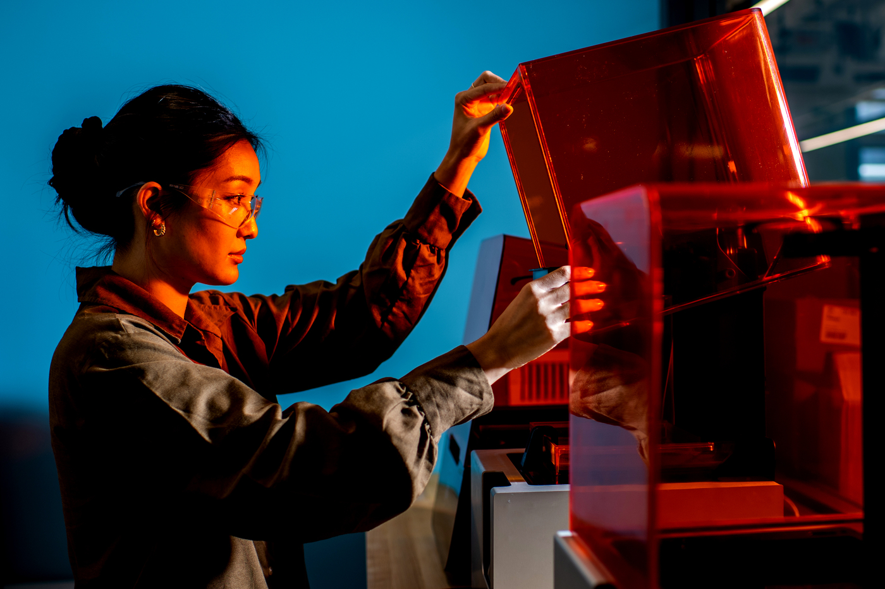
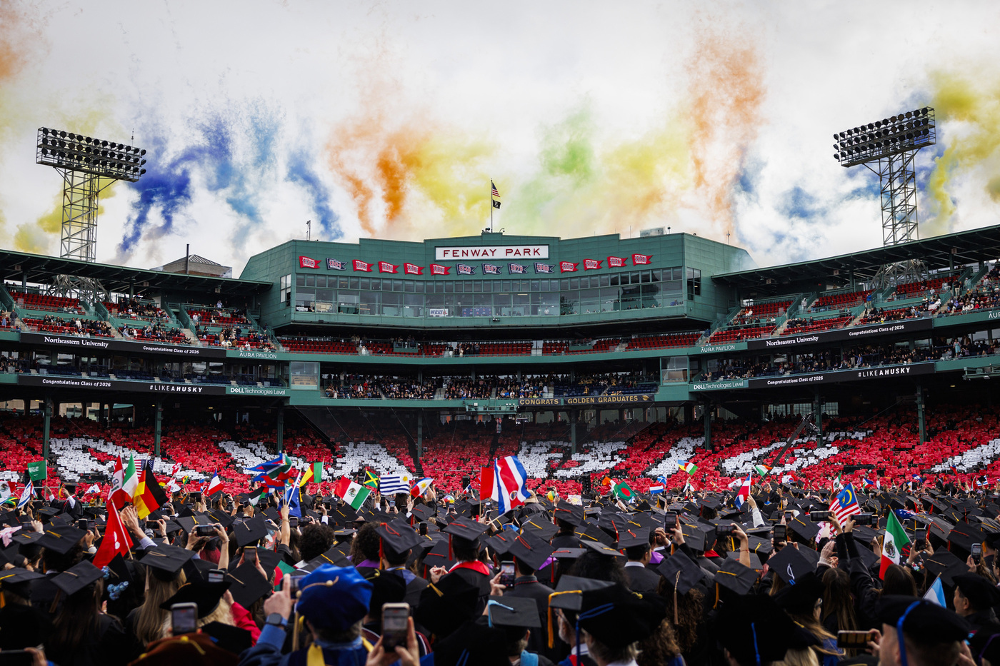

northeastern.edu review
Where the sites stand, what changes in each phase, the content model that keeps repeated facts in one place, and the design system the new pages are built on.
The pages
The phase 1 pages and the first phase 2 site homes, rebuilt on the design system with their live copy. Comment anywhere.
Open the sitemapHome page
The northeastern.edu home page concept every redesigned page is built from: the 22a header, the pillars and the global university system globe.
Front doors and offices



Utility pages
Privacy
The privacy statement, readable, with contents.
Emergency information
Numbers and actions first, for every campus.
Today
Most pages on the phase 1 and 2 sites are shells: auto-generated archives, finished programs, broken links and copies of pages that live somewhere else.
1,129
pages on these sites today
1,032
retired or cut: empty archives, test pages, broken links and copies
17
merged into another page
80
pages that stay, rebuilt
Our approach
Phase 1 rebuilds northeastern.edu and its pages. Phase 2 rebuilds the top-level subdomains and their whole sites. They ship together, as one launch; the phases divide the work, not the release. Phase 3 follows the launch.
Why one launch
Phase 1 moves pages into phase 2 sites
Co-op's nine pages move to experientiallearning and the Boston page moves to boston, and more merge into pages there. Launched alone, they would land on sites that haven't been rebuilt.
Every redirect needs a page ready at the other end
146 of the 462 northeastern.edu pages that retire redirect to another Northeastern site. Each one needs a page waiting there on launch day, and on the phase 2 sites those are the pages phase 2 rebuilds.
| Phase | Site | Pages today | At the end | What happens |
|---|---|---|---|---|
| Phase 1 | northeastern.edu | 522 | 27 | 462 retired or cut, 26 renamed, 12 merged, 10 move to the site that owns the subject |
| Phase 2 | experientiallearning | 55 | 17 | Co-op moves in from northeastern.edu (9 pages); 46 retired |
| Phase 2 | research | 296 | 28 | 247 retired or cut, 5 merged |
| Phase 2 | entrepreneurship | 256 | 7 | 249 auto-generated partner, program and archive pages retired |
| Phase 2 | boston | 0 | 1 | New: northeastern.edu/campuses/boston moves here |
| One launch | 1,129 | 80 |
Phase 3, after the launch: the 34 other sites the new header links to: admissions, graduate and PhD programs, the 13 campus sites, D'Amore-McKim, Mosaic, and services like HR, the events calendar and athletics. None has been crawled page by page yet.
Content model
Campuses, people, figures, programs and stories are written once in a shared hub and placed on any page by reference. Change a figure once and every page that shows it changes.
See the content modelDesign system
Components built on one set of tokens and drawn from what the live sites already do well.
Component library
Every component with its specimen on both grounds and at both widths, what it takes, when to use it, and the pages that use it.
Section patterns
Sections built once and used in any version of a page: heroes, sets of parallel items, picture and copy.